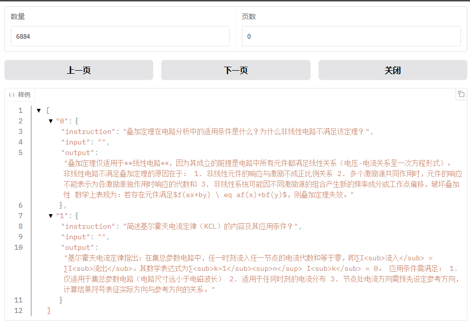
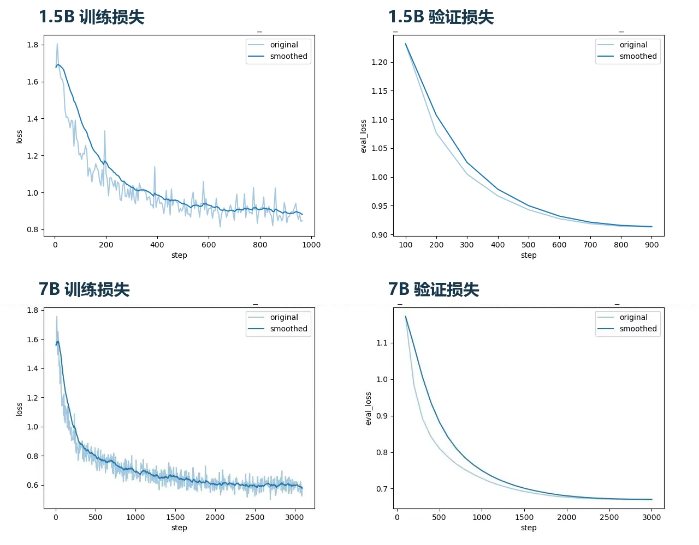

材料与写法 / 论文第三章
训练界面、题库和四条损失曲线
本章目录
想找“那次到底怎么训的”，我会先翻论文第三章。图 3-5 留下了数据预览，表 3-2 写着最后选用的参数，后面四幅图分别画两种模型的训练和验证损失。
训练界面的第一道题


看截图左上角的“数量”，是 6,884。再读第一道题，它问叠加定理为什么适用于线性电路。最后的演示又问了这道题，所以可以直接把训练预览与本地模型的回答对照。预览中的第二道题是基尔霍夫电流定律。两道题的次序也能在留存的 QA/data/all.txt 开头找到。
数题时先看正在数什么
| 数字 | 位置 | 数的对象 |
|---|---|---|
| 6,895 | 3 月 16 日周报；论文正文第 6 页 | 项目汇报的生成量 |
| 6,885 | 论文正文第 25 页，图 3-3 附近 | 论文报告的清洗后数量 |
| 6,884 | 论文图 3-5 | 界面预览计数 |
| 6,894 | 留存的 QA/data/all.txt |
行首题干字段的次数 |
| 6,875 | 同一文本，按独立花括号切块 | 候选块数，19 个块各包进两道题干 |
| 6,381 | 逐块做严格 JSON 解析 | 语法有效的块数，其中 6,380 块的三个字段都是字符串 |
三月的周报讲制作进度，界面记录了打开某版数据时的样子。要自己复核中间文本，可以从汇总文件第 17,376、17,382 行开始看。相邻两行题干之间少了一处独立结束边界，直到第 17,385 行才合上。这个例子能解释为什么会有两种计数。各题型的重复和错标见题库主张。
表 3-2 与损失曲线
1.5B 用学习率 2×10⁻⁵、5 轮、batch 4、constant 调度。7B 用初始学习率 5×10⁻⁴、8 轮、batch 1、cosine 调度。两者的记录都是 bf16、截断 2,048 token、验证比例 10%。


先横着看每一行。训练损失是训练样本上对目标 token 的预测误差，验证损失来自留出的样本。再读横轴，上下两组的步数范围不同。论文记下的验证末值约为 0.91 和 0.67。对照两套配置后，可继续读为什么最后接入 7B。
白板推导可以查哪几处
- 基座名称和来源见 DeepSeek 的模型卡。1.5B、7B 用的是已经完成蒸馏的 Qwen 系列权重，毕设从这里开始做课程适配。DeepSeek 模型卡
- 冻结基座、训练低秩增量的推导见原论文第 4 节。LoRA 原论文
- 初始化、缩放及目标层属于适配器配置项。重做时可以把
adapter_config.json和每次运行的训练配置一起存档。PEFT 配置文档 - 想进一步讨论 4 位基座在训练中的位置，可以看 QLoRA 原文。毕设表 3-2 记载的训练精度是 bf16。QLoRA 原论文